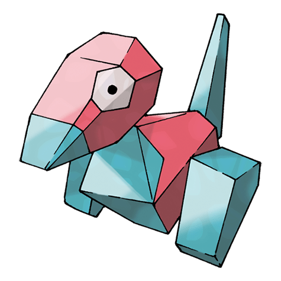

Назад
Поригонг

Поригон — Покемон 1 поколения под номером 137 в Покедекс. Обитает он в регионе Канто и относится к Нормальному типу. Поригон способен полностью вернутся к программным данным и войти в киберпространство. Этот Покемон защищён от клонирования, поэтому его нельзя продублировать путём копирования.
Тип:
Нормальный
Эволюция
# 137 Поригон